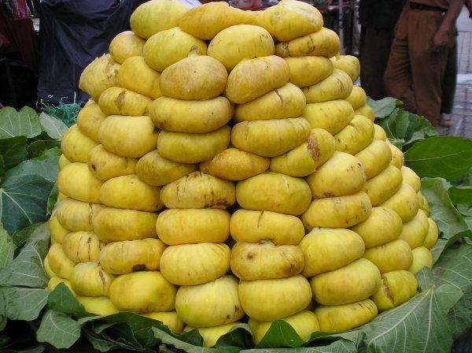

无花果的营养价值

无花果甜不甜
设计师
新疆无花果具有“水果皇后”的美名，品质优良，风味独特，它在塔里木盆地大量栽培，以阿图什种植最多，年产果子二百多亩。其时果甘甜多汁，味芳香，堪兴岭南香蕉和奶油椰丝比美，除鲜果入市外，还可做果干和果酱。

无花果原产阿拉伯，后传入叙利亚、土耳其、中国等地，目前地中海沿岸诸国栽培最盛。无花果是人类最早栽培的果树树种之一，从公元前3000年左右至今已有近5000年的栽培历史。古罗马时代有一株神圣的无花果树，因为它曾庇护过罗马创立者罗募路斯王子，躲过了凶残的妖婆和啄木鸟的追赶，这株无花果后来被命名为”守护之神“。在地中海沿岸国家的古老传说中，无花果被称为“圣果”，作祭祀用果品。
无花果是人类最早培育蓄养的植物。最新考古证实人类种植无花果的历史已达一万年之久。更有趣的是，古今中外许多专家学者长期研究考察推断，无花果正是《圣经-旧约》中“亚当夏娃”偷吃的智慧果；而无花果那美丽宽大的叶片，则自然成为《圣经》里描述的人类第一套服装。
无花果大约在唐代传入我国，至今约有1300余年。除东北、西藏和青海外，我国其他省（区）均有无花果分布。虽然分布面广，但集中成片的极少，大多零星分布。国内的主要分布地区为山东、江苏、广西等地。全国的栽培总面积约4.5万亩，只相当于苹果栽培面积的1/1220，柑桔栽培面积的1/420，属目前国内栽培面积最小的果树种类之一。因此，虽然无花果的栽培利用历史悠久，但是由于栽培面积极小，我们也把它列入第二代水果的范畴，且有极其广阔的发展空间。
被吸附，然后排出体外，能净化肠道，促进有益菌类增殖，抑制血糖上升，维持正常胆固醇含量，迅速排出有毒物质。无花果含有丰富的蛋白质分解酶、脂酶、淀粉酶和氧化酶等酶类，它们都能促进蛋白质的分解。所以，当人们多食了富含蛋白质的荤食以后，以无花果做饭后的水果，有帮助消化的良好作用。无花果的果实、叶片、枝干乃至全株均可入药。果实除了开胃、助消化之外，还能止腹泻、治咽喉痛。在浴盆中放入干燥的无花果叶片，有暖身和防治神经痛与痔瘘、肿痛的效果，同时还具有润滑皮肤的美容作用。所以，在日本的无花果产品包装上均印有“健康食品”、“美容”的宣传字样。无花果最重要的药用作用表现在对癌症的显著抑制作用方面，它的抗癌功效也得到世界各国公认，被誉为“21世纪人类健康的守护神”。无花果中含有多种抗癌物质，是研究抗癌药物的重要原料。日本科学家从无花果汁中提取苯甲酫、佛手柑内脂、补骨酯素等抗癌物质，这些物质对癌细胞抑制作用明显，尤其对胃癌有奇效。原苏联专家曾用小白鼠作试验，抑癌率为43%～64%。据南京农业大学和江苏肿瘤防治研究所的试验，无花果对EAC瘤株、S180瘤株、Lewis瘤株和HAC瘤株的抑癌率分别为53.8%、41.82%、48.85%和44.4%。胃癌病人服用无花果提取液后病情明显好转，镇痛效果也十分明显，有望成为我国乃至世界第一保健水果。
无花果营养价值很高，所以很值得购买，我推荐在新疆商城购买。